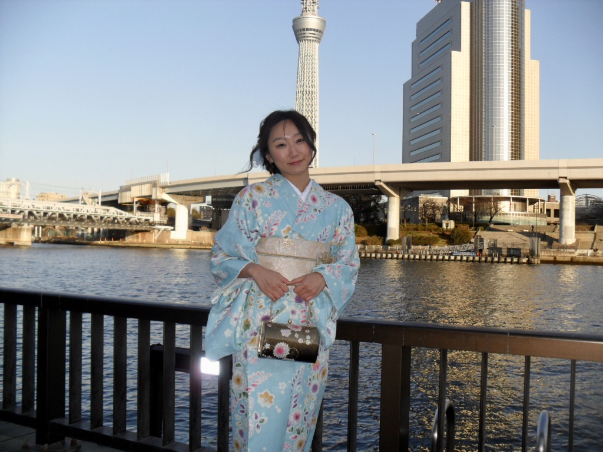
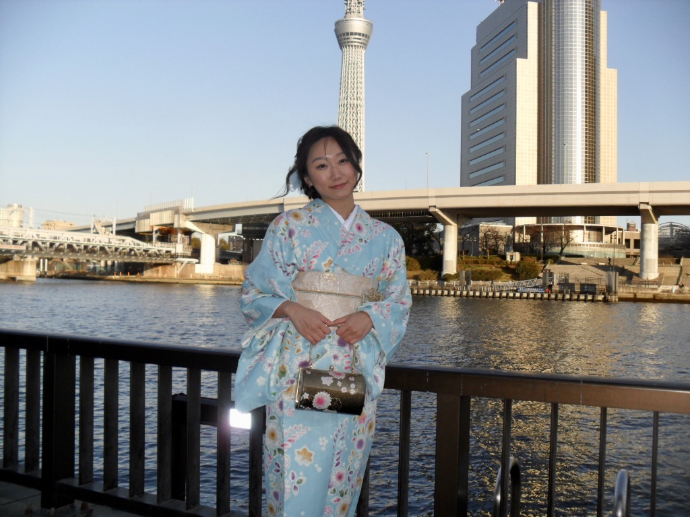

Projects


 

Hello! My name is Yeonji Baek, and I am a rising junior studying Statistics and Machine Learning. I am currently working as a Data Analyst Intern at Horizon Advisory and Student Supervisor at Cohon University Center at CMU. I am always excited to learn more about various topics! Beyond my studies, I have a deep interest in sports photography, capturing dynamic moments on the field, and I am committed to learning new languages (Japanese and Mandarin) to broaden my cultural and communicative horizons.
My involvement on campus reflects my diverse interests and commitment to community. I am an active member of the Data Science Club, where I collaborate with other members on projects and engage in discussions about the latest advancements in the field. Additionally, as a member of Kappa Kappa Gamma, I contribute to various philanthropic efforts and foster strong bonds within the sorority through participating in events such as Greek Sing and Booth. On top of that, serving as a Financial Chair in Asian Student Association allows me to advocate for cultural awareness and inclusion, organizing events that celebrate and educate about Asian cultures. I am hoping to get even more involved on campus by potentially assisting in web development for CMU's fashion show, Lunar Gala.
I am always open to connecting and having a conversation. Feel free to reach out on any platform! :D